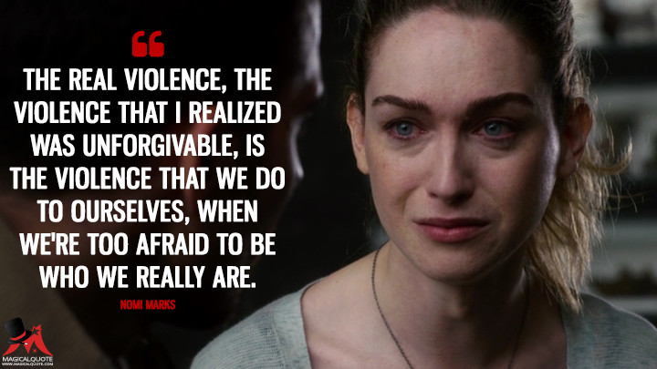

Parks and Recreation Quotes
"Never half-ass two things. Whole-ass one thing." - Ron Swanson

The Meangles are weird. The words they say sound passive but seem agressive.
I feel like there should be a term for that. Like, "nicey-meanie" - Andy Dwyer.

“If I keep my body moving, and my mind occupied at all times,
I will avoid falling into a bottomless pit of despair.” - Chris Traeger
“Watch the master work it. I am the Yoda of networking.” — Tom
“Well, Yoda wouldn’t actually need networking, his powers were more spiritual.” –Ben
“Shut up, you nerd!” — Tom
Sense8
"It's obedience, not resistance. That's the glue of every country, every army, every religion in the world." — Felix
